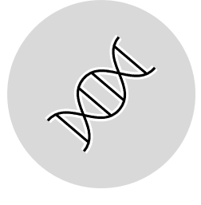
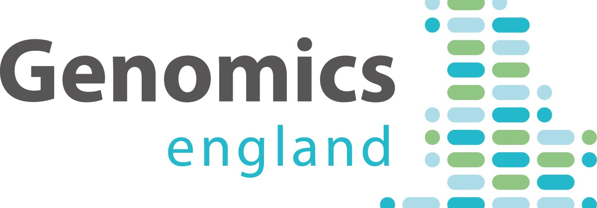

Research and Statistics skills
GMO7 - Research and statistical skills for genomic medicine

This module aims to provide and equip students with the knowledge of statistics and computational tools needed to independently complete genomic medicine research. This module complements the knowledge from the wider course to ensure all students are competent in planning research, and can perform appropriate statistical analysis in R. The module is designed to prepare students for research projects and presents material in this context. This module serves as an informatics foundation for students learning bioinformatics and statistical languages. In particular, the module introduces students to the Genomics England Research Environment, and provides self-directed, and supervised learning of the Unix command line environment and the R statistics language.
What will I study in this module?
In GMO7 you will learn about:
How to write a research grant proposal
Up to date computational and experimental tools for genomic medicine research projects
The Genomics England research environment and how to perform research on the 100,000 genomes dataset.
How to use the Unix command line and Galaxy to perform basic genomic analysis
Fundamental concepts in statistics offering students a foundation and framework for understanding more complex methods.
Implementation of the statistical methods illustrated during the course using the R environment.
Basic concepts in using R
Basic statistical and mathematical concepts including correlation, regression, model selection, and generalized linear models
Exploration of bayesian statistics and tools applied for haplotype estimation and Machine Learning tools for non-linear regression will also be explored
What will I be able to achieve at the end?
By the end of this module students will be able to:
Demonstrate a rounded knowledge of the classic and modern tools and technologies used in research projects. Emphasis will be placed on the overlap between modern and traditional approaches and the type of data they might be presented within a research project
Understand the conceptual basis for statistical tests, and be aware of the various tools that they can implement when exploring either genomic or expression data
Choose the correct statistical test based on the data source and experimental design and implement the test in R
Have a thorough understanding of the types of computational tool available for use in research projects, and the best platform to use them on (Galaxy, command line, HPC etc.)
Have a good understanding of how to access the central University Linux cluster from an external computer, in preparation for accessing remote High Performance Computing services.

Preserved from https://www.genomics.cam/modules/gmo7-research-and-statistical-skills-for-genomic-medicine on 10 September 2026. Linked external services may require internet access. The original source snapshot is included with the migration files.